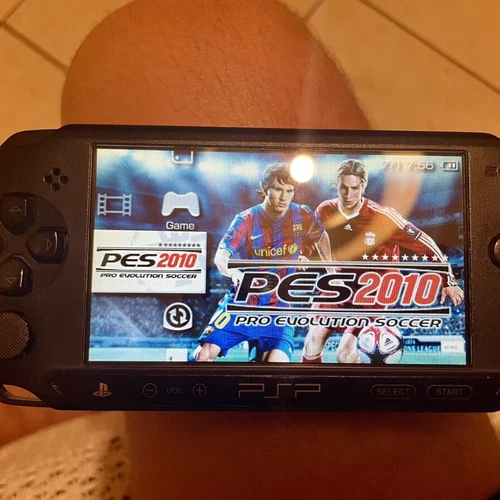

Released in 2004, the PlayStation Portable (PSP) was a true technical marvel of its time. It was the first handheld console capable of delivering 3D graphics close in quality to the home PlayStation 2.
Sony took a bold step and developed its own unique optical format — UMD (Universal Media Disc). Holding up to 1.8 GB of data, these tiny discs in protective plastic shells allowed the PSP to host full-fledged games rather than simplified mobile titles, such as God of War: Chains of Olympus and GTA: Liberty City Stories.
Beyond gaming, the PSP was marketed as an all-in-one multimedia device: users could watch movies off UMDs, listen to MP3 music, and browse the web via Wi-Fi. Selling over 80 million units worldwide, the console attained cult status supported by a huge community of enthusiasts and custom firmware developers.
<-- Return to Main Page